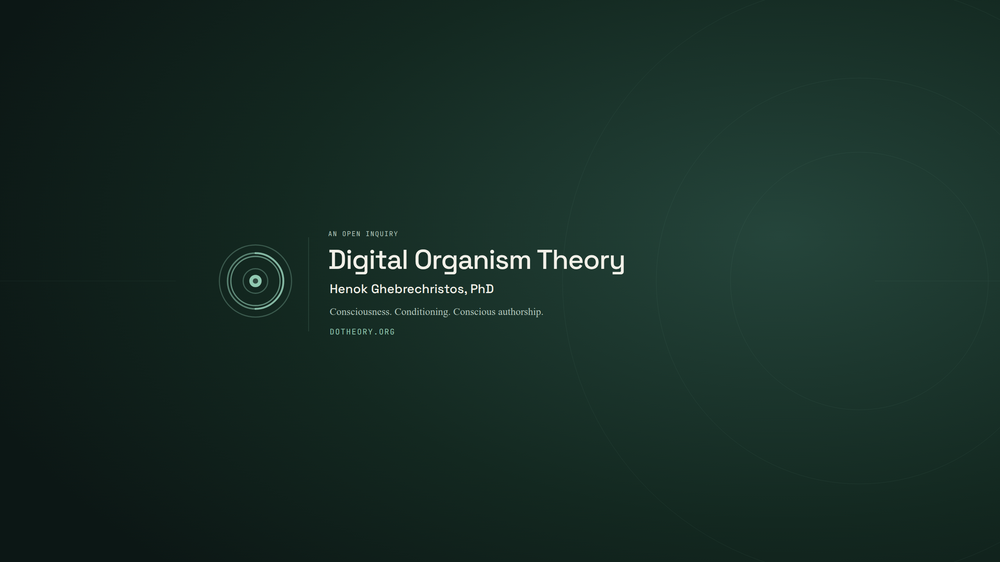
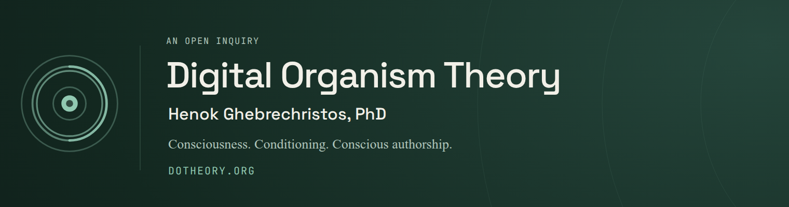
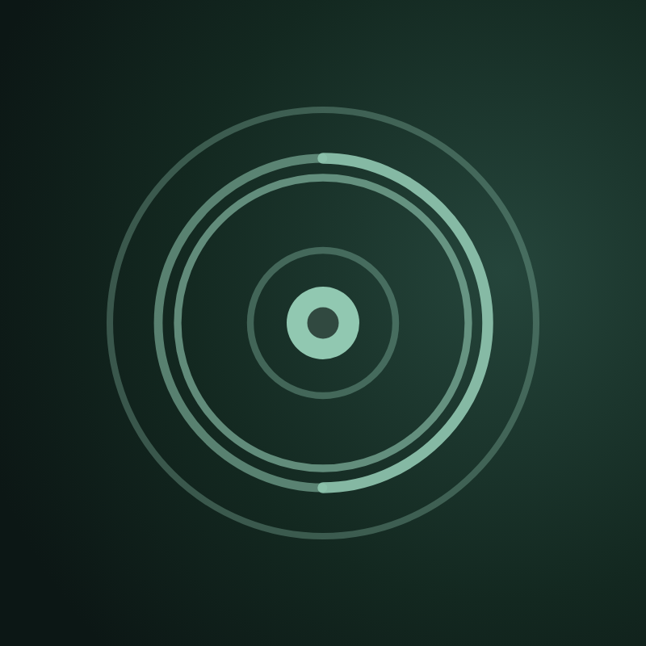
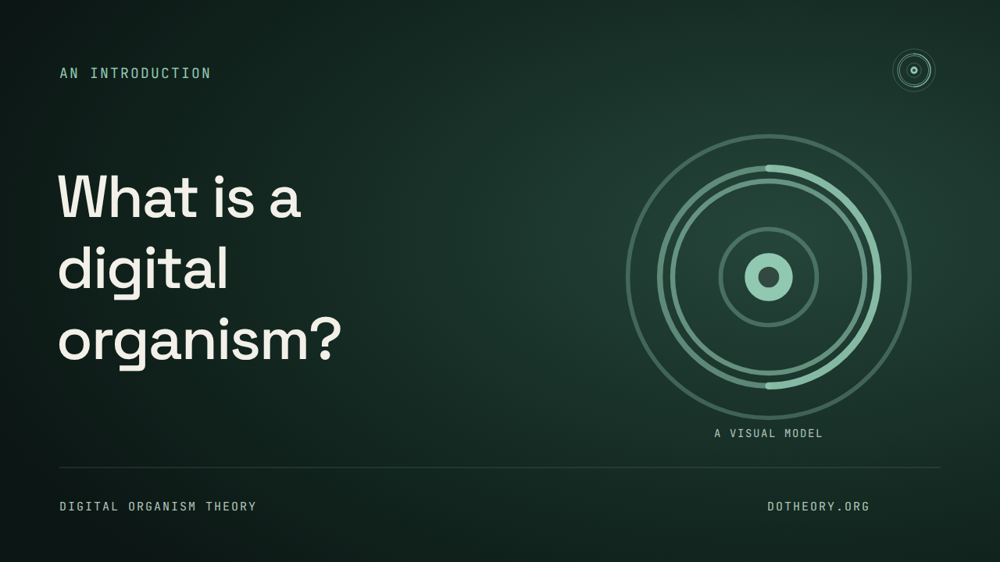
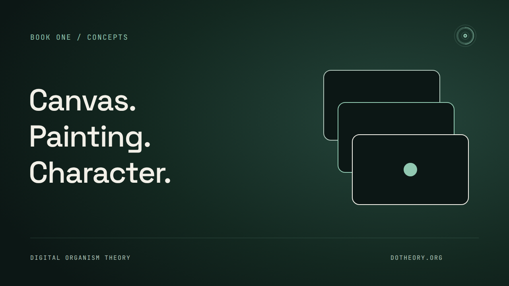
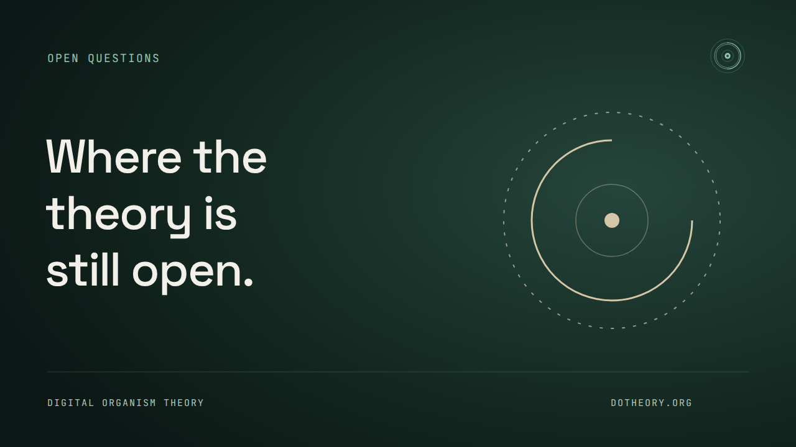
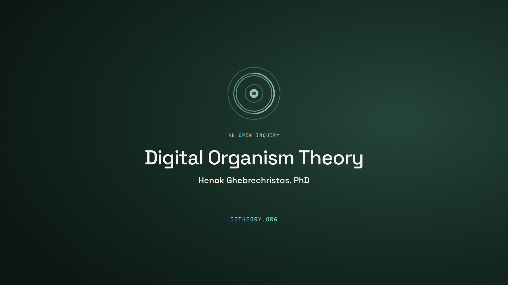

Channel identity / ready-to-upload artwork
Digital Organism Theory
Author credit: Henok Ghebrechristos, PhD.
A theory-led identity with a human author. The existing nucleus mark, Space Grotesk, Source Serif 4, and JetBrains Mono connect the channel to the book's public home. Ink, warm white, and restrained mint keep the work legible without spectacle.
The channel has not been created or published. This kit does not claim a YouTube handle, add a placeholder link, or change the live site.
Channel banner
The name, author credit, subject line, and website all stay within the conservative centre safe area. Outer rings are decoration, not a literal map or a scientific measurement.

Mobile-safe crop

Channel avatar
Use the existing DOT mark rather than shrinking your full name or degree into a tiny profile image. Your identity remains in the banner and channel description.

A repeatable thumbnail language
One honest question or concept, large text, one drawing. These are proposed first-video covers, not announcements of finished videos. Keep the title faithful to what the video actually explains.









1280 × 720 each. No fabricated results, authority bait, urgency, or subscriber/view counters.
A still splash / title card

Open the video with a meaningful question or explanation. If you use this card, keep it brief—roughly a second—or omit it. It also works as a quiet ending. No long compulsory intro, stinger, or “hit the bell” prompt.
Channel setup
- Create the channel from a Google account you control. Use Digital Organism Theory as the display name. Choose an available handle in YouTube; no handle has been reserved here.
- Upload the full banner and avatar PNGs in YouTube Studio's channel-customisation controls.
- Review the proposed description below. Put “PhD in Computer Science” in the description; the degree is relevant background, not evidence that the consciousness hypotheses are established.
- Add dotheory.org as the website link and Book One as the reading link. Add About only after that page is deployed.
- Once created, supply the actual channel URL so the website can link to it consistently. Nothing in this kit opens reader signup or PDF sales.
Proposed description — review before publishing
Digital Organism Theory explores consciousness, conditioning, and conscious authorship through the framework developed in Consciousness: A Digital Organism, Book One.
The channel is led by Henok Ghebrechristos, who holds a PhD in Computer Science. The inquiry distinguishes observations, models, hypotheses, and speculation; consciousness-first claims are proposals, not established scientific results.
Read the complete book at https://dotheory.org/book/digital-organism-theory.
Three useful starting videos
- What is a digital organism? Explain the working definition, a concrete example, and the boundary between model and hypothesis.
- Canvas, Painting, Character. Explain the three terms with one ordinary example of conditioning and choice.
- Where the theory is still open. Take a serious objection, identify what evidence would be needed, and separate metaphor from a testable claim.
No upload streak or artificial schedule is required. Publish a finite, useful explanation when it is ready; link to the relevant book passage and make room for criticism.
Editing and rebuilding
PNG files are the upload-ready exports. SVG files include the site's existing, SIL Open Font License fonts and remain editable. Font notices are retained in FONT-LICENSES.txt. Some vector editors do not support embedded WOFF2; install the named fonts there or use the PNG.
Change the artwork or thumbnail titles in
frontend/scripts/render-channel-kit.mjs, then run from
the repository root:
pnpm --dir frontend exec node scripts/render-channel-kit.mjsThe renderer checks actual text bounds, circular-crop safety, PNG dimensions, and upload byte limits. It uses local fonts and the existing Playwright Chromium installation, without contacting outside services.
Manifesto: serves L1 (calm), L8 (useful explanations), L9 (local, untracked artwork), and L10 (single-focus covers); violates none. This is an off-site design kit, not a member screen or a new Attention OS primitive.
Sizing reference: YouTube's official branding guidance. The banner's 1520 × 400 safe area is slightly smaller than the official minimum-resolution safe area scaled to a 2560 × 1440 canvas.